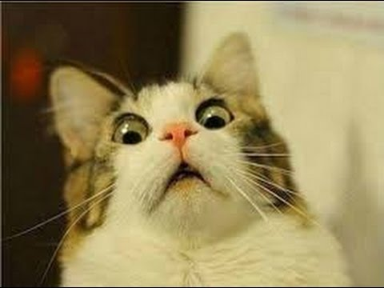
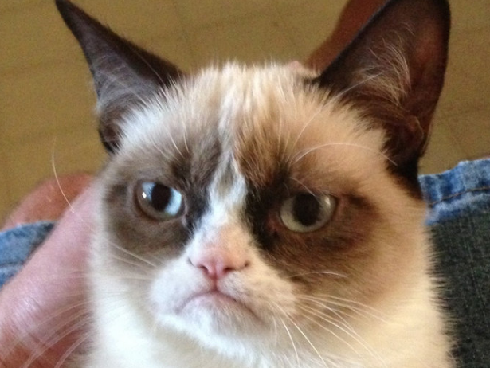
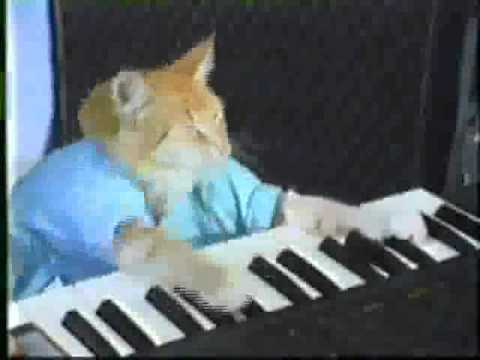

Koty są królami w internecie!

Od paru lat ludzie w internecie spędzają najwięcej czasu na przeglądaniu obrazków ze śmiesznymi kotami. Niektóre z tych kotów są już celebrytami. Pierwszym z takich kocich celebrytów jest "Grumpy Cat"

Czytaj dalej
Drugim wielkim kotem w internecie jest Keyboard Cat

Czytaj dalej